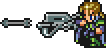

CSS Transform
The transform property applies a 2D or 3D transformation to an element.
This property allows you to rotate, scale, move, skew, etc., elements.
HTML
<div class="block" id="transformDIV">
<img src="../images/Steal_Locke.gif" alt="locke sprite"
width="52" height="52">
</div>
CSS
div #transformDIV:hover {
transition-duration: 2s, 1s;
transition-timing-function: ease;
transition-delay: 0s, 1s;
transform: rotate(360deg)}
Result

At their most basic level, transforms move or change the appearance of an element, while transitions make the element smoothly and gradually change from one state to another.
